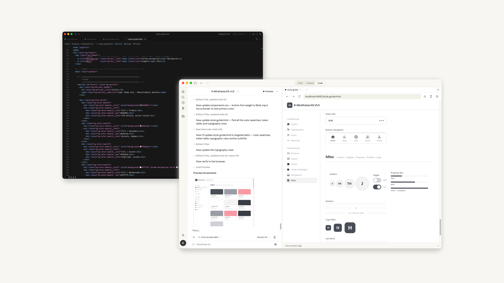
Side Project · AI Tools
Build a simple Wireframe Kit with Claude Code + Figma + Cursor
Thử dành 2 ngày build nhanh một bộ Wireframe Kit bằng Claude Code, 1 Designer, 0 Front-end developer xem thế nào.
Tranh thủ vài hôm rảnh, mình thử bào Claude Code xem có thể làm gì với nó. Mình lên nhanh ý tưởng build một bộ Wireframe Kit để tiện dùng trong công việc. Và vì sợ quên, nên mình viết bài này coi như note lại cách mình đã làm như nào :D
Để thực hiện ý tưởng này mình chủ yếu làm việc trên Claude Code và Figma, việc polish styling HTML/CSS chủ yếu dùng Cursor để tiết kiệm token :D Và sau 2 ngày, kết quả mình nhận được là một bộ Wireframe Kit cơ bản đúng style mong muốn và cho phép Claude Code dùng lại được trong các project và design khác nhau.
Lời nhắn nhỏ: Bài viết này chia sẻ nhanh về quá trình mình làm và những gì mình học được, không mang tính chất hướng dẫn, vì mình vẫn đang tự học và mày mò, hy vọng nhận thêm góp ý từ mọi người nhé!
Setup Claude Code ↔ Figma
Ở bước này mình đã follow các tutorial trên YouTube để setup. Bước này rất quan trọng, nó sẽ mở ra con đường 2-Way Claude Code ↔ Figma đi qua đi lại giữa 2 tool mượt mà nhất.
- Design with Claude Code - The Designer's Guide: youtube.com/watch?v=JMQ0X_si144
- Two Way Claude Code + Figma in 10 minutes: youtube.com/watch?v=9Qs2KytMa64
- Claude Skills: youtube.com/watch?v=Iup1WlUyj9M
Tạo local folder
Việc tổ chức lưu trữ mọi thứ về một nơi theo mình rất quan trọng, khi cần tìm gì liên quan mình chỉ cần vào để tìm thôi, rất nhanh và tiện. Claude Code sẽ cần một local folder để store tất cả các files mà nó build được cho bạn. Hơn thế nữa, có thể duplicate hẳn local folder như này và reuse cho nhiều project khác.
Viết file instruction "CLAUDE.md"
Đây là bước mình đưa ra yêu cầu và cung cấp thông tin cơ bản để Claude Code hiểu mong muốn của mình. Cách mình viết khá đơn giản - tưởng tượng bạn đang muốn giao việc cho một junior/fresher thì như thế nào vậy đó. Thế nhưng cũng không nên sơ sài, vì bạn càng đưa nhiều thông tin thì Claude Code càng dễ get context và bớt đi chệch hướng hơn.
Ở bước này và xuyên suốt lúc làm, mình hay chat với Claude để hỏi và fix nhanh các vấn đề xảy ra.
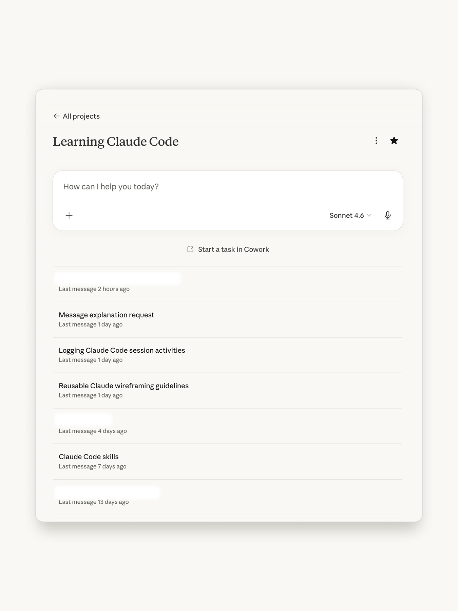
Chiếc prompt đầu tiên trên Claude Code
Khi bạn đã tạo ra một file instruction bài bản rồi thì việc viết prompt đầu tiên trên Claude Code nhẹ nhàng hơn rất nhiều. Mình bắt đầu bằng việc bắt nó get context từ file "CLAUDE.md" để double check xem nó hiểu đúng mong muốn của mình chưa.
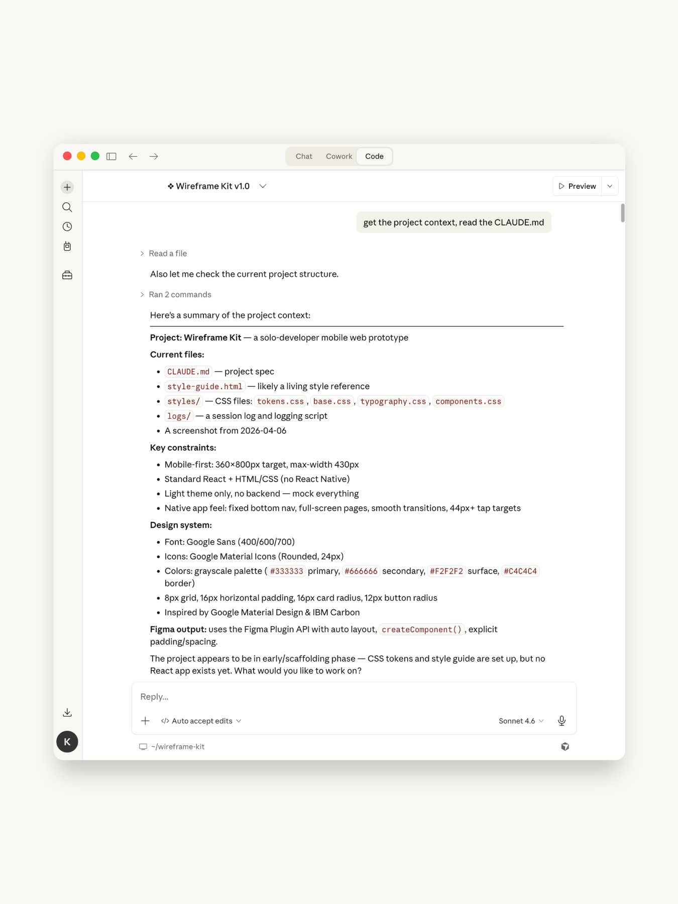
Tiếp theo mình prompt cho nó build từng phần của bộ Wireframe Kit, bắt đầu từ token, styles, typography, components… Lúc này mình bắt đầu nhận được các file HTML/CSS liên quan trong local folder được tạo ra bởi Claude Code.
Task nặng hơn, phức tạp hơn
Sau khi hòm hòm được bộ styling, mình bắt đầu yêu cầu Claude Code build ra bộ style guide đầu tiên. Đây là lúc Claude Code đỉnh thực sự. Nó tự build cho mình một file style-guide.html hoàn chỉnh với layout khá chỉnh chu, thậm chí còn build sẵn cho mình một số component như buttons, inputs, labels mặc dù mình không hề mention trước đó.
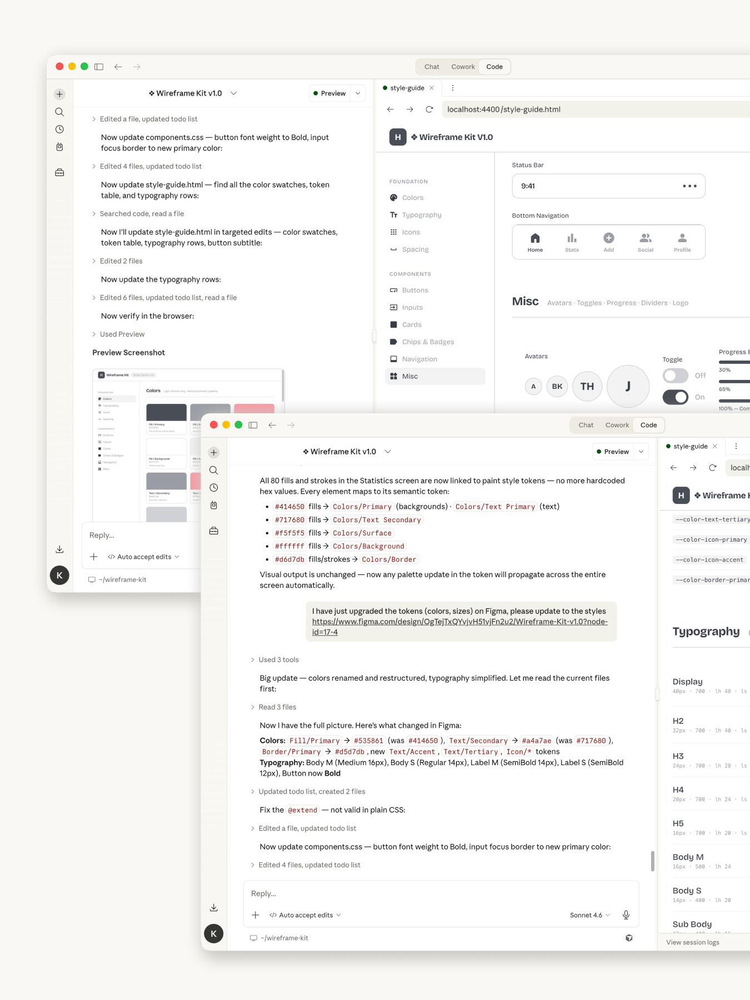
Sau đó mình yêu cầu Claude Code build bộ style guide ra Figma. Bản build đầu tiên mình nhận được đạt 60–70% expectation của mình. Đối với nhiều người, đây là bước Claude Code gây thất vọng nhất - vì một số hạn chế như không có auto layout, không tạo component, không apply token, text style… Nhưng 1st version thì làm sao hoàn hảo ngay được, thế nên mình khá hài lòng với những gì Claude Code build được ở bước đầu.
Không thể xa rời Figma
Tất nhiên rồi, mối quan hệ này mãi mãi bên nhau :D Vì Claude Code chưa thể build đúng ý 100% thế nên mình vẫn tự tay tút tát lại những điểm chưa ưng ý bằng Figma.
Sau đó mình tiếp tục bắt Claude Code update lại bộ styling (HTML/CSS) dựa trên những gì mình đã update trên Figma. Việc này được lặp đi lặp lại nhiều lần trong suốt quá trình làm cho đến khi build được bộ Wireframe Kit mà mình ưng ý.
Cursor giúp mình tiết kiệm token
Vô tình mình mở một file CSS gen ra bởi Claude Code trên Cursor, thế là nó dẫn mình đến mảnh đất thật mới mẻ và đầy cuốn hút.
Lúc đầu chưa biết mình đã đốt rất nhiều token để nhờ Claude Code chỉnh sửa các dòng code như đổi color, đổi padding… Khi biết cách view và dùng Cursor edit, mọi thứ cực kỳ nhanh và tiện - mình hoàn toàn kiểm soát được việc polish các styling nhỏ mà không cần Claude Code hay Figma nữa.
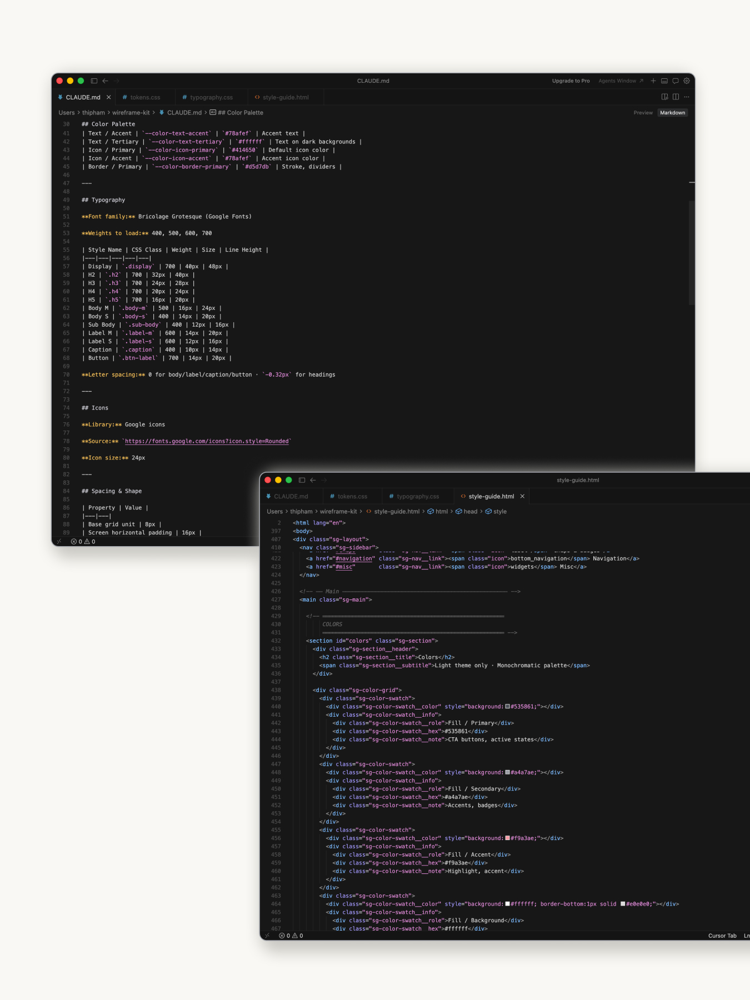
Test thử xem bộ Wireframe Kit có làm được việc không
Ý tưởng ban đầu của mình là sẽ dùng bộ này để build nhanh wireframe, ít phải động tay động chân trên Figma, tất cả để Claude Code làm. Sau nhiều lần chỉnh sửa, chỉ dạy hết nước và khi đã ưng ý với mọi thứ, mình bắt đầu yêu cầu Claude Code build thử ra một vài màn hình mobile design. Mình khá kiệm lời ở bước này, thế nên Claude cũng mất tầm 4–5 phút để hoàn tất một screen. Chắc về sau nên prompt kỹ hơn - Claude Code sẽ hiểu nhanh và làm nhanh hơn. Nhưng sau tất cả mình vẫn thực sự hài lòng với những gì Claude Code build được.
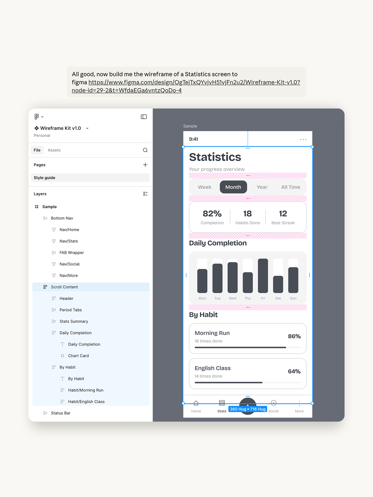
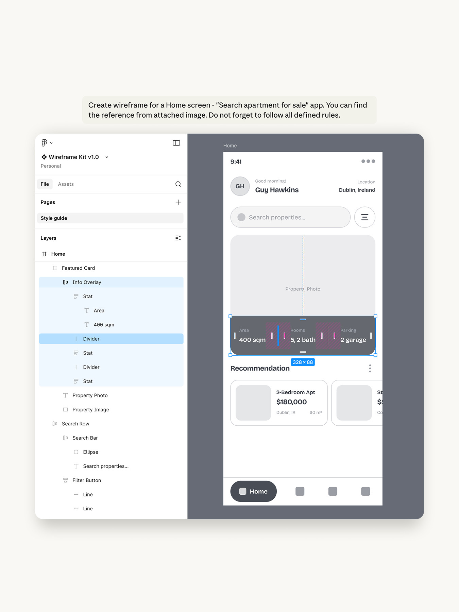
Và đánh giá lại là một project thành công đúng không mọi người? Sau này muốn tạo nhanh wireframe cho bất kỳ feature nào, mình hoàn toàn có thể dùng cách này để có design đúng styling mình muốn. Quick and consistent!
Mình cũng đang mày mò cách dùng Claude Code build prototype view trên trình duyệt (HTML/CSS), mong sẽ được connect thêm với mọi người để cùng học hỏi.
Cám ơn mọi người đã dành thời gian đọc bài viết này nhé ❤️
More case studies
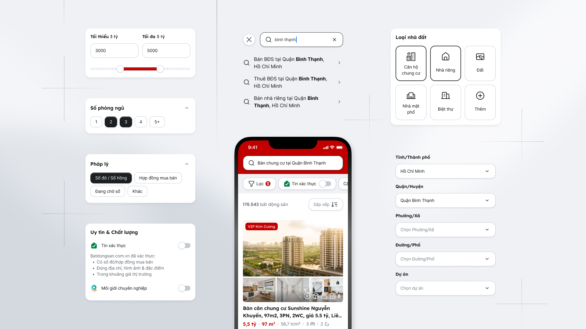
Case Study · Real Estate
Solve user pain points on search & filter tool
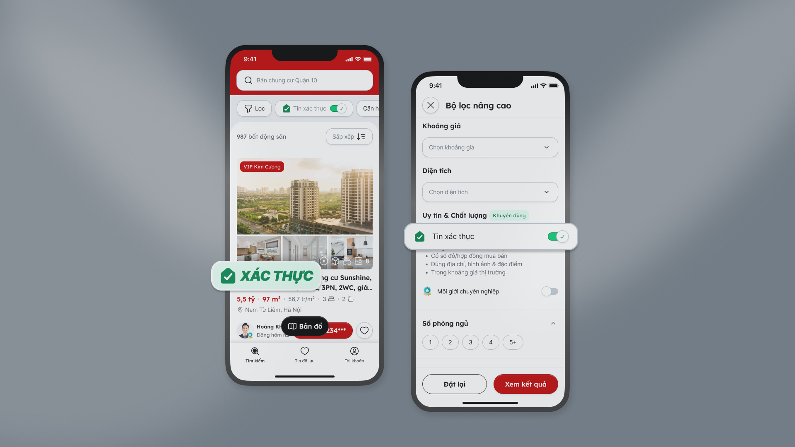
Case Study · Real Estate
Increase user trust on the marketplace
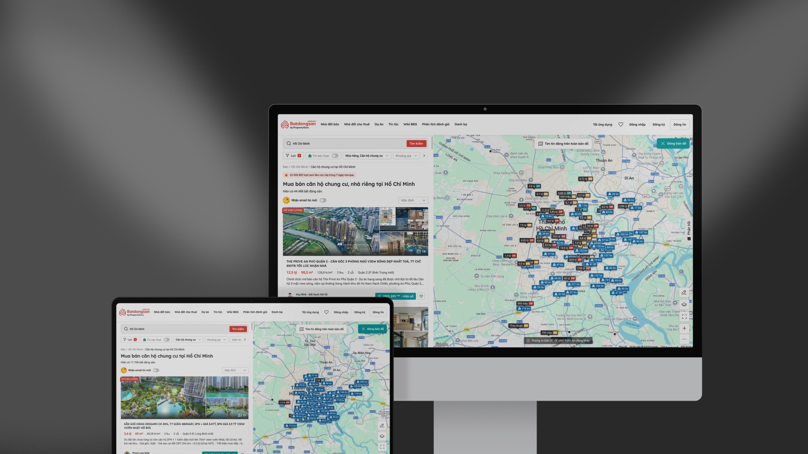
Case Study · Real Estate
Map view - Bring new experiences to home seekers
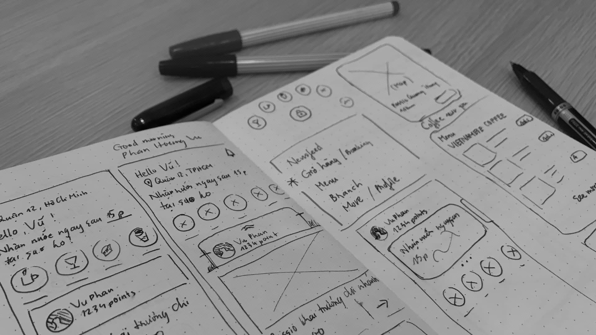
Highlighted Works
Selected projects across B2C and B2B
Happy to connect & build products together
Phone: 036 744 3501
Email: hapham270891@gmail.com